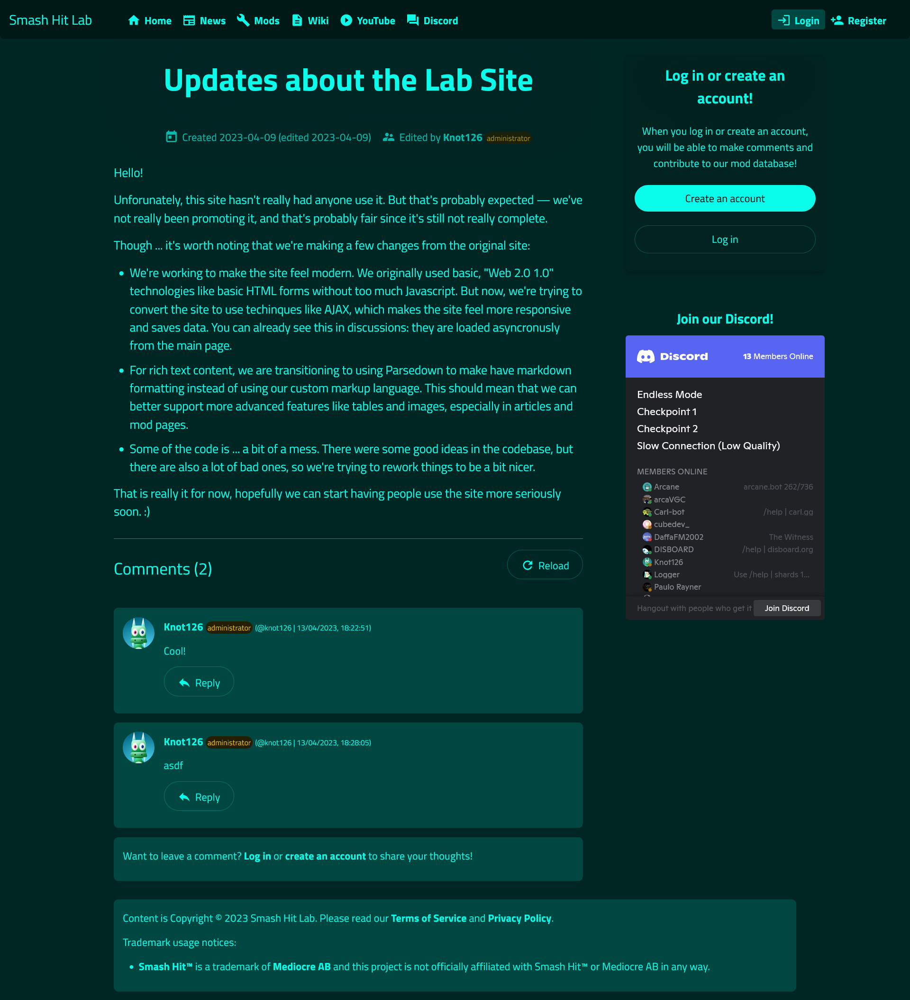

Smash Hit Lab Website
{kind=link}
The Smash Hit Lab Website — which is powered by Labbyware, a custom CMS and wiki — is a mod database, news site and community centre for fans of the mobile game Smash Hit. This is probably the first widely usable project I have made moreso from scratch.
Visit the Smash Hit Lab
This is the website as it is currently running.
Features
It features the abilities to:
- create accounts (and automatically generate passwords for them)
- edit mod database pages (for users of the site)
- make comments and mention users in comments
- delete (hide) individual comments (I would like to point out that Google Chat doesn't have this as a feature.)
- recieve notifications when mentioned or a message is left on your userpage
- edit private or public articles for people with staff or admin priveleges
- moderate the site (banning users and their IPs, hiding comments)
- other various admin tools
- allow users to block each other
- do various maintanance tasks (backups)
The backend was written in PHP, with no frameworks and not using a real database. I don't really like PHP as a language — I know that few actually do — but it's what most free webhosts seem to only provide, and it's still one of the fastest "make something from scratch" languages despite having so many quirks.
As for the database, it's a thin wrapper around the filesystem and JSON encoding, mainly because I don't really enjoy the way SQL is used in practise. For any large site, just having JSON and some folders wouldn't work, but I think for a small site this isn't an issue.
My favourite part of the codebase is probably either the generic discussions system that handles reviews, comments and message walls or how sending a notification can be done by calling notify($name, $title, $url) (or notify_many or notify_scan). It should probably be behind some kind of event or message system (and I've noted that), but ATM just calling it directly is fine. :)
I think I could have taken a bit more time at the start to improve code quality, however. The implementation of database was first and I think it's pretty nice because you can just do things like:
$db = new Database("some_table_name");
if ($db->has("my_object")) {
$obj = $db->load("my_object");
}
else {
$db->save("my_object", array("1" => "2", "3" => "4"));
$obj = $db->load("my_object");
}
But other places sometimes work with primitives where functions should probably exist for doing those things. For a long time, for example, there wasn't a nice function to echo out a form to the screen — which is another issue. I really should not have made the mistake of using echo directly and instead creating a Page class that has methods like append($content), set_title($title), etc. I'm working to fix this and the codebase is under 10K lines right now, so I think it might not be too hard to do.
Security was something I have tried to consider when creating the site, though I know some things I didn't initially think about that would need some work.